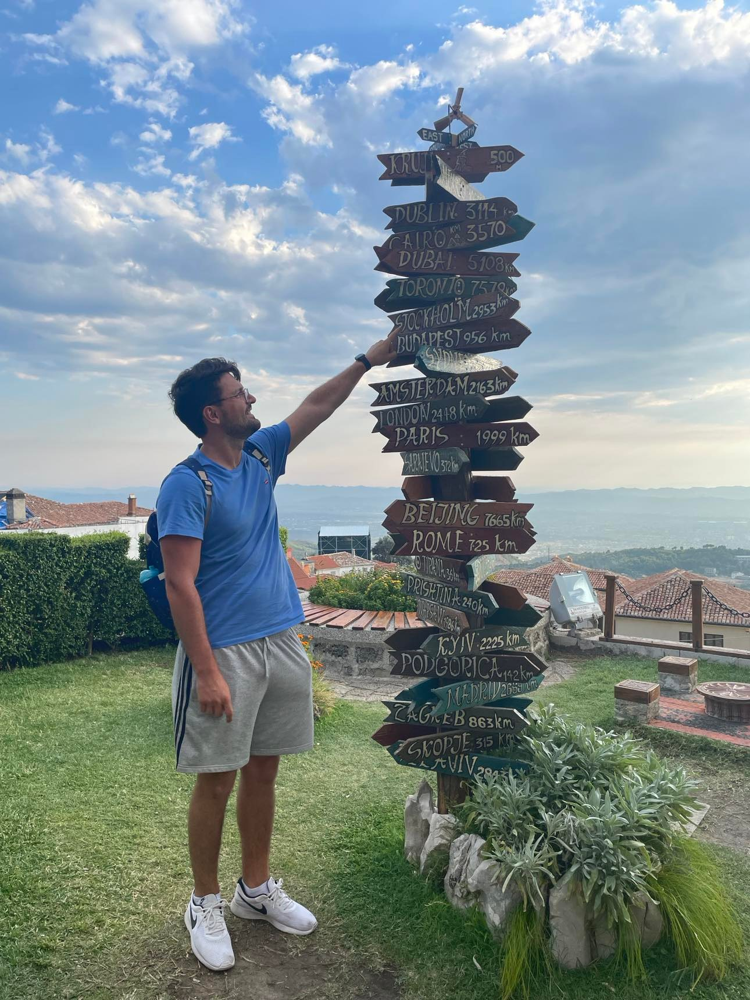

Meriton Bytyqi

Summary
Education
-
Civilingenjör Informationsteknologi, Uppsala Universitet
-
Master med inriktning Mjukvaruutveckling
- Naturventenskapsprogrammet, Haraldsbo
-
Inriktning Naturvetenskap
Work experience
-
2023- Swesharp - Mjukvaruutvecklare/Systemutvecklare
-
Arbetar i ett agilt team som en System- och Mjukvaruutvecklare med
systemförvaltningsprogram för PEAB både front end och back end.
Tekniker som används i arbetet är .NET, Azure Devops, kodgranskning.
-
2021-2023 AFRY - Mjukvaruutvecklare/Systemutvecklare
Arbetade agilt som System- och Mjukvaruutvecklare i ett team utveckling skedde i ramverket
.NET. Kodgranskade samt hjälpte till med ritning av systemarkitektur
-
2020-2021 Manpower - Lagerarbetare
Lagerarbetare som gick ut på att plocka, packa samt sortera böcker på ett stort boklager.
-
2018-2018 International Automotive Components - Operatör/Montör
Operatör och montör på avdelning för bildelar till Volvo. Hjälpte även till som koordinator över
en grupp anställda.
Skills
- Windows/Mac OS/ Linux: Very good knowledge
- Office package: Very good knowledge
- GIT: Very good knowledge
- Figma: Very good knowledge
- .NET: Very good knowledge
- Flutter: Good knowledge
- Python: Good knowledge
- HTML/CSS/JavaScript: Good knowledge
- SQL: Good knowledge
- MATLAB: Good knowledge
Languages
- Swedish: Mother tounge
- Albanian: Mother tounge
- English: Very good knowledge
- German: Limited knowledge
Other
- Master thesis
- Bachelor thesis
Contact me
Send Email
LinkedIn